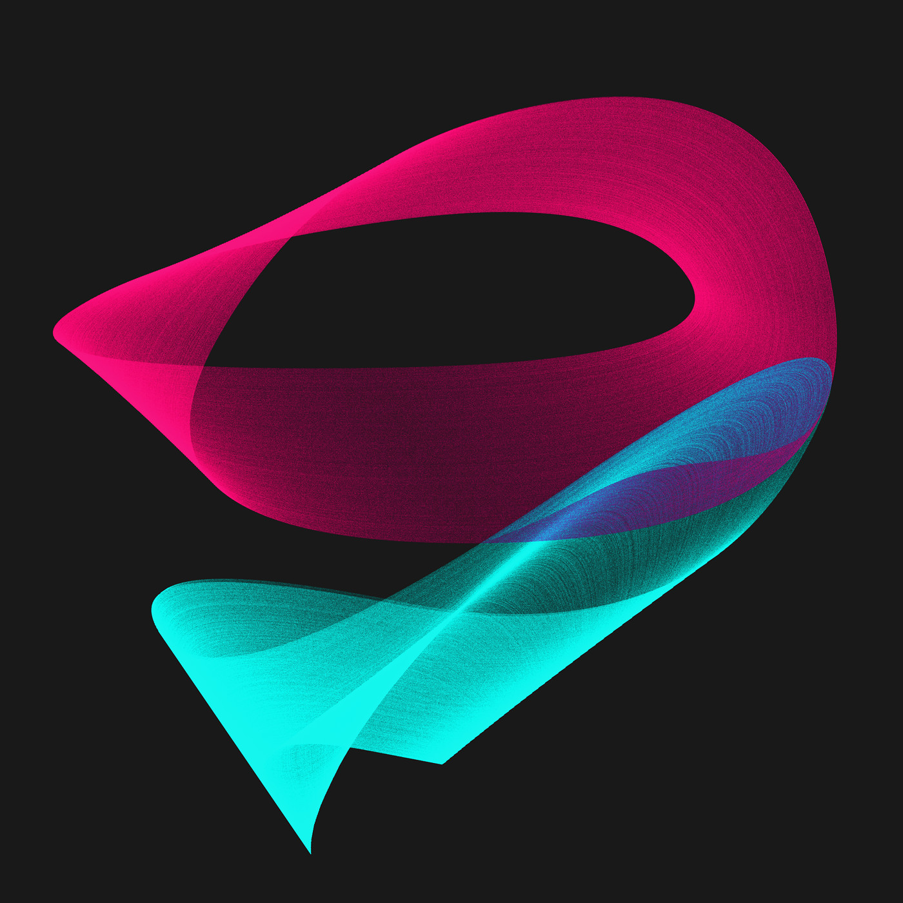
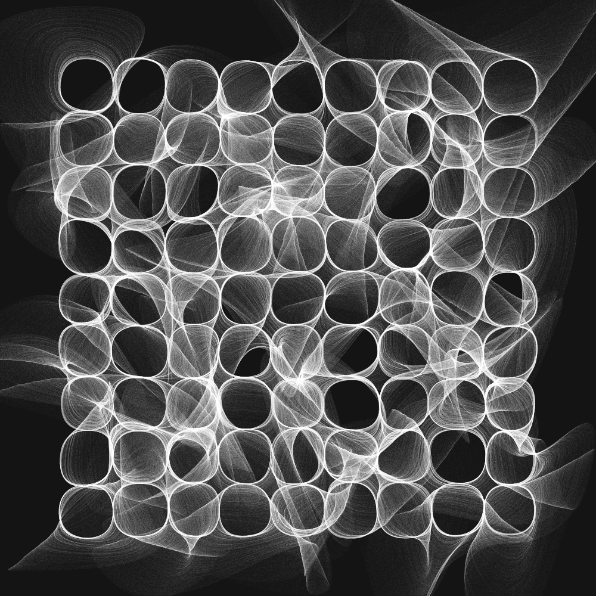
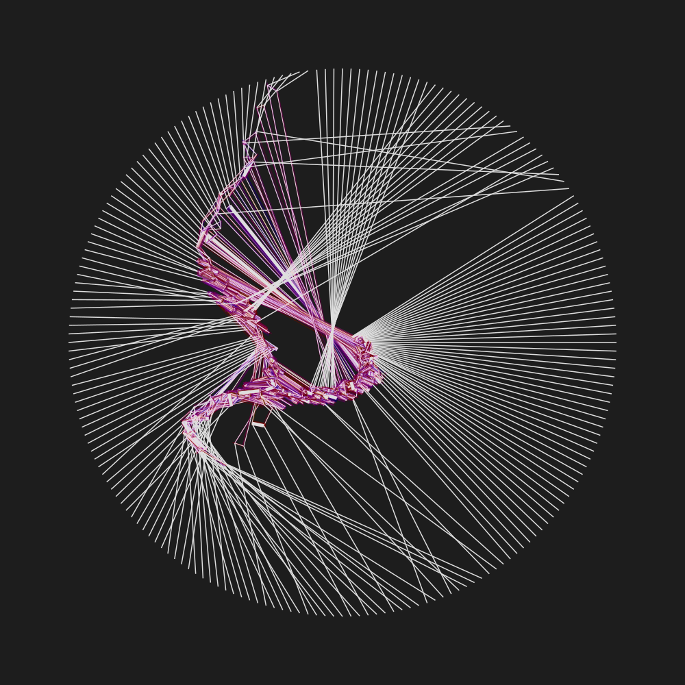
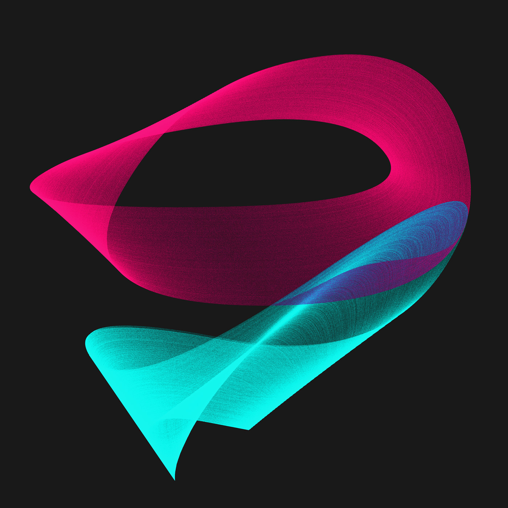
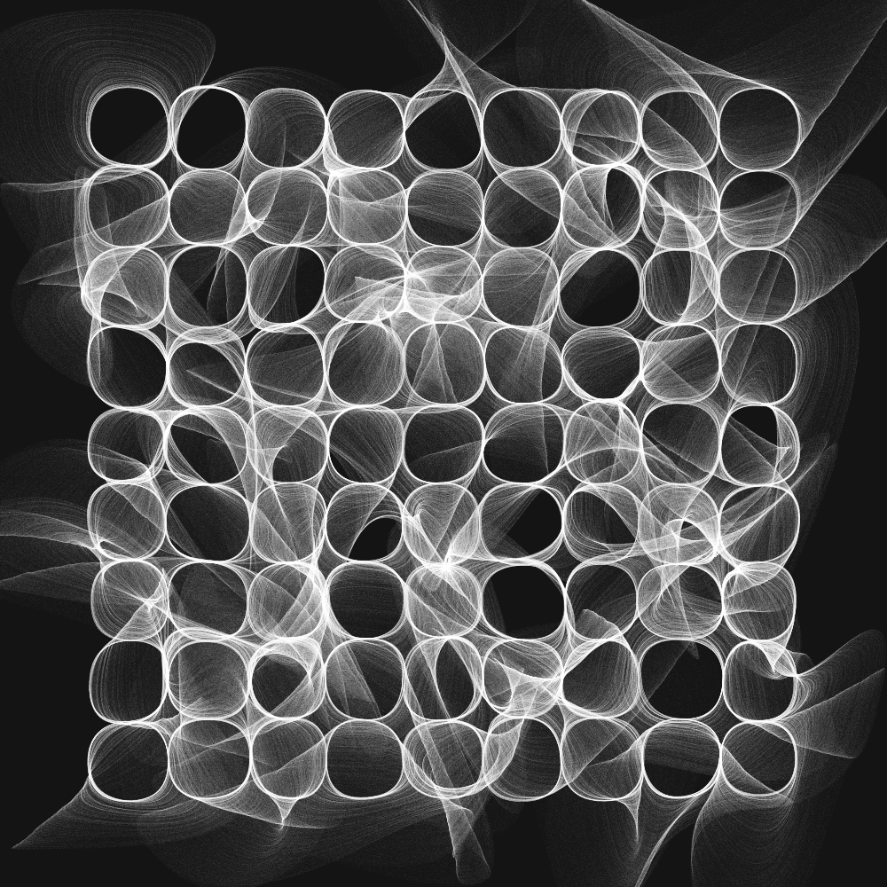
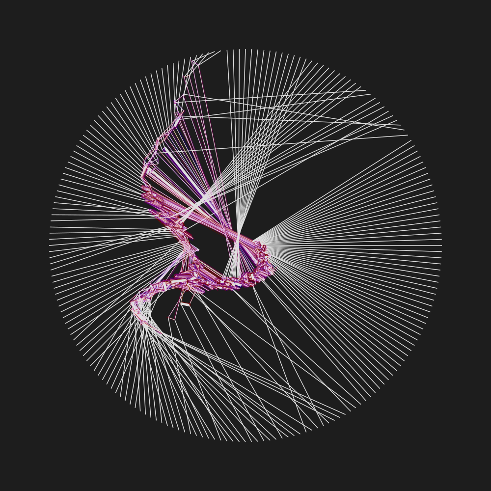

A collection of Sofian Mustafa's artistic and creative works, putting web art on display.
Web, generative, and net art like never before through example works by visionary artists .
Anders Hoff is a generative artist whose work can be described as a play on or disruption of simplicity. While an immediate reaction to an initial viewing of Hoff's work suggests a piece largely depicting simple patterns or simple geometric shapes, closer inspection of the project reveals many unique and complex intricacies part of Hoff's creative thinking process and his experimental and creative use of computer software and programming that are prevalent in the artwork.
Hoff's art, while unique and creative, is visually stimulating, minimalistic, and enticing to view. This is because it initially, as a template, begins as a pattern or shape that we are all familiar with, and ends up as a work that could only be from Hoff's own imagination and experimental ability, while preserving the familiarity to the original pattern or shape we may have. Furthermore, each of Hoff's works makes exemplary use of negative space that instantly draws the viewer's attention to the main subject, which maintains it with its ingenuinity.
Much of Anders Hoff's work is 3D generated or produced using programming algorithms using the Python
programming language. The following gallery consists of images from Hoff's Inconvergent project, which, as
he describes,
explores how to use algorithms to create aesthetic compositions, structures and textures.
 




